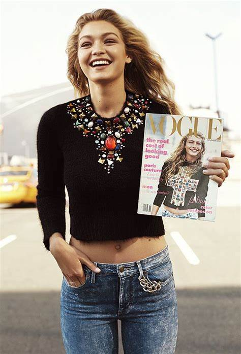
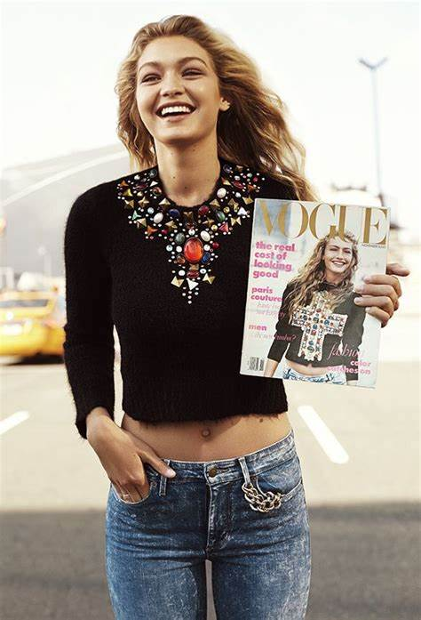

Jelena Noura Hadid (Malibu, 23 de abril de 1995) conhecida profissionalmente por Gigi Hadid, é uma supermodelo americana.
Hadid assinou um contrato com a IMG Models em 2013.[4] Foi a modelo que mais fotografou para a renomada Vogue em 2019.
Gigi Hadid nasceu e cresceu em Los Angeles. Filha do empresário de imobiliário Mohamed Hadid e da ex-modelo Yolanda Hadid, sua mãe é americana-neerlandesa e seu pai é palestino-americano. Hadid tem dois irmãos mais novos, uma irmã, Bella Hadid e um irmão, Anwar, ambos também modelos.
Ela tem duas meia-irmãs mais velhas e paternas, Marielle e Alana. Em 2013, se formou na Escola Secundária de Malibu, onde foi capitã da equipe de vôlei , além de participar de competições de montaria.


Hadid apareceu no calendário Pirelli de 2015.[10] Em janeiro de 2015, ela foi nomeada a modelo do ano da Daily Front Row,[11] e um embaixador da marca Maybelline.[12] Em maio de 2015, Hadid desfilou para vários designers, incluindo: Marc Jacobs, Chanel, Michael Kors, Jean Paul Gaultier e Max Mara. A irmã de Gigi, Bella também é modelo, e as duas irmãs foram apresentadas juntas em algumas aparições de modelos, incluindo uma sessão de fotos para a revista V em junho de 2015.[13] Em dezembro de 2015, ela fez sua primeira aparição no Victoria's Secret Fashion Show.[14]
Hadid apareceu em capas de revistas, incluindo Vogue (Estados Unidos, Paris, Itália, Grã-Bretanha, Japão, Espanha, Austrália, Brasil, Holanda, Alemanha, Itália, China), Schön!,[15] Numéro, Allure, W Magazine e Teen Vogue, bem como WSJ Magazine, Elle Canada, Dazed e Harper's Bazaar (EUA, Malásia).[16][17][18] Hadid também filmou editoriais para VMAN, Elle, Grazia, Cleo, Vogue,Sports Illustrated, revista de papel, Vanity Fair e V Magazine. Hadid também estrelou campanhas para Guess, Versace, Penshoppe, Balmain F / W 2015, Topshop, Max Mara e Stuart Weitzman.[19][20]
Em 2016, ela desfilou para: Versace, Chanel, Elie Saab, Fendi, Marc Jacobs, Anna Sui, Miu Miu, Balmain, Diane Von Furstenberg, Tommy Hilfiger, Fenty x Puma, Isabel Marant e Giambattista Valli.[21][22][23] Em janeiro de 2016, ela se tornou a embaixadora da marca global Tommy Hilfiger, liderando campanhas de roupas íntimas, vestuário e fragrâncias.[24] Em abril de 2016, Hadid estrelou uma campanha interativa que inclui um comercial para o BMW M2.[25] Ela foi Host dos Prêmios 2016 iHeartRadio Much Music Video em Toronto em 19 de junho de 2016.[26] Ela co-projetou uma coleção de cápsulas com Tommy Hilfiger chamado Gigi por Tommy Hilfiger, que foi lançado no outono de 2016 na New York Fashion Week.[27]
Durante o outono de 2016 Fashion Weekeks em Nova York, Milão e Paris, Hadid abriu cinco shows e fechou sete.[28] Em outubro, sua coleção de bota para Stuart Weitzman intitulada Gigi Boot foi revelada[29] é foi anunciado que Hadid se tornou uma embaixadora da marca Reebok, enfrentando a campanha #PerfectNever.[
 
